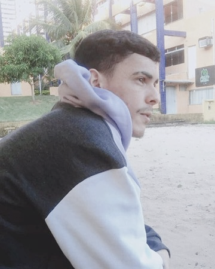
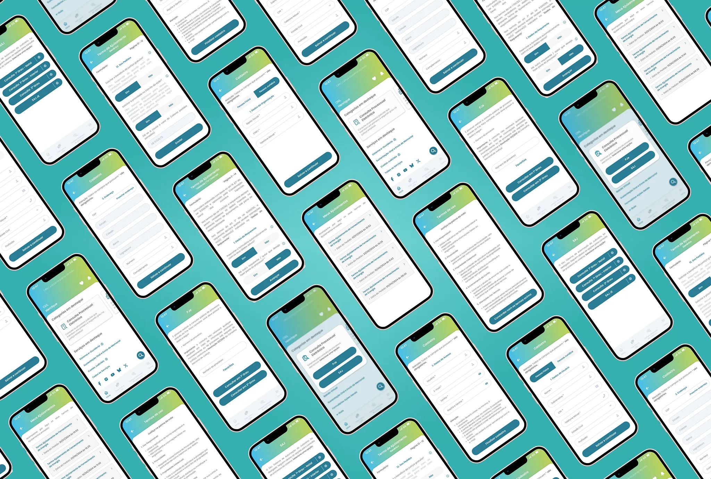
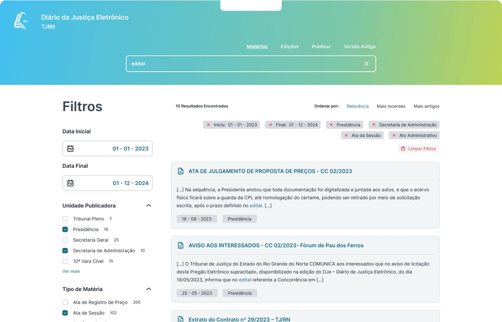
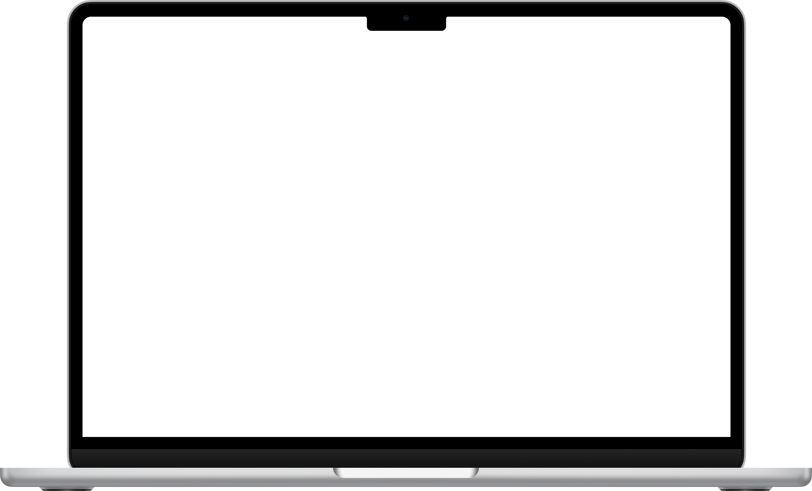
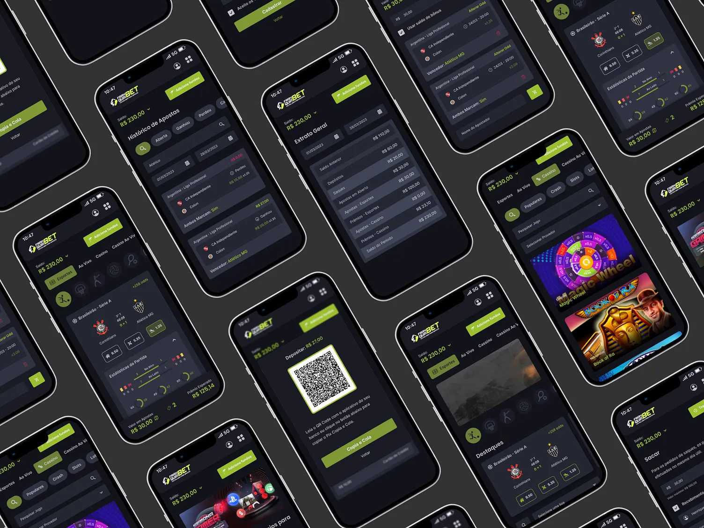
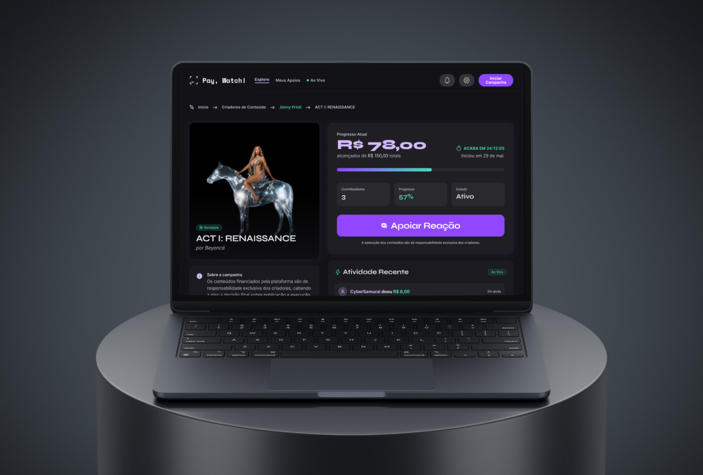
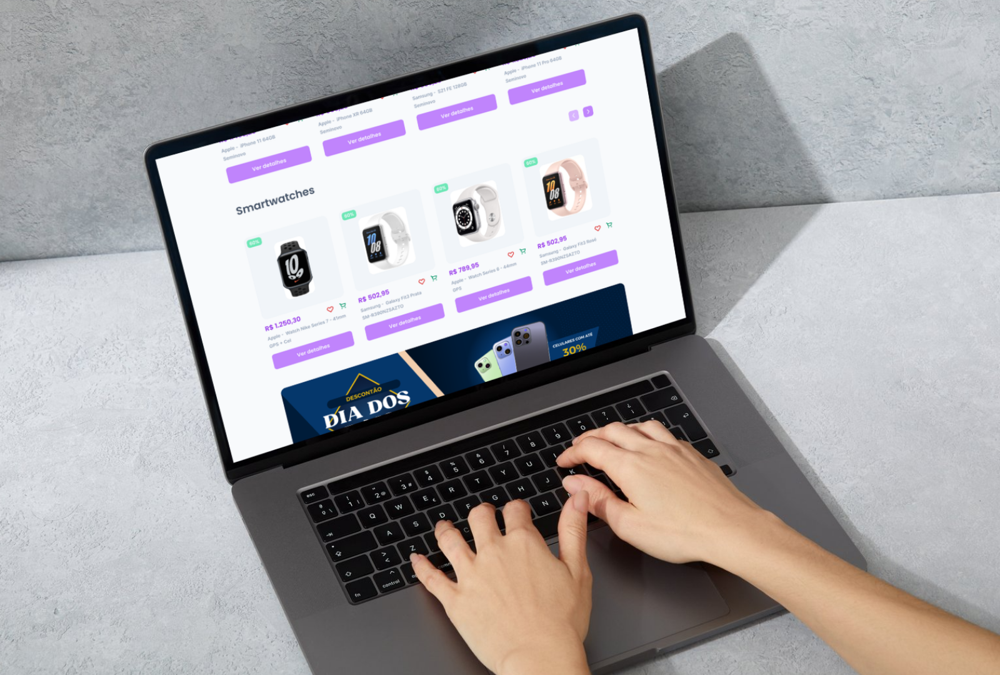
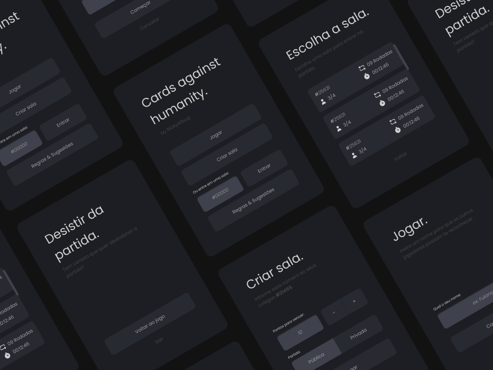

Transformando ideias em experiências.
Sou um designer de produtos e experiências digitais. No meu trabalho, priorizo a intenção clara, a simplicidade funcional e a criação de um impacto duradouro.

Trabalhos
Seleção 2026—2022
-

Projeto RealJustiça RN
A plataforma permite que cidadãos ingressem com ações de pequenas causas e acompanhem seus processos pelo celular, sem precisar de advogado.
Ver projeto -


Projeto RealSistemas TJRN
Uma suíte de sistemas jurídicos amplamente adotados por profissionais, servidores e a comunidade jurídica.
Ver projeto -

Projeto RealFranquiaBET
Uma plataforma SaaS e um aplicativo móvel dedicados a apostas esportivas e jogos de cassino online.
Ver projeto
Estudos
Seleção 2026—2022
-

Estudo de CasoPay, Watch!
Uma plataforma de financiamento coletivo em que a comunidade apoia novos criadores e filmes através de um modelo de crowdfund por episódios.
Ver projeto -

Estudo de CasoLojinha
Redesign de e-commerce focado em otimizar a navegação, busca e descoberta de produtos e uma jornada de compra simples.
Ver projeto -

Estudo de CasoCards Against Humanity
Um estudo de prototipagem que adapta o jogo de cartas Cards Against Humanity para uma experiência mobile web moderna.
Ver projeto